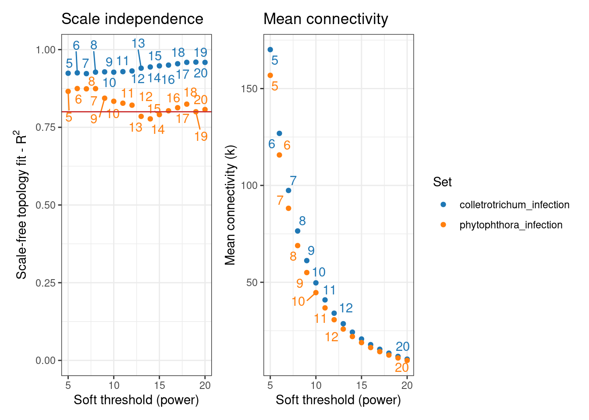
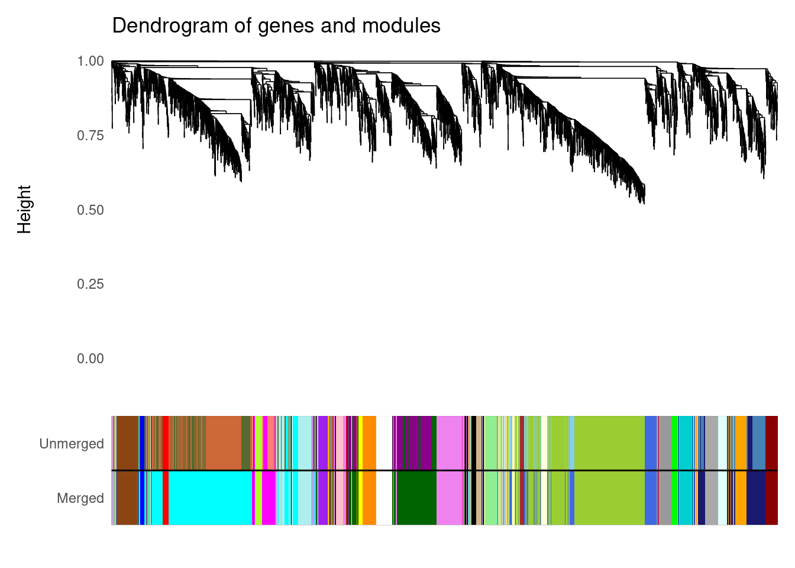
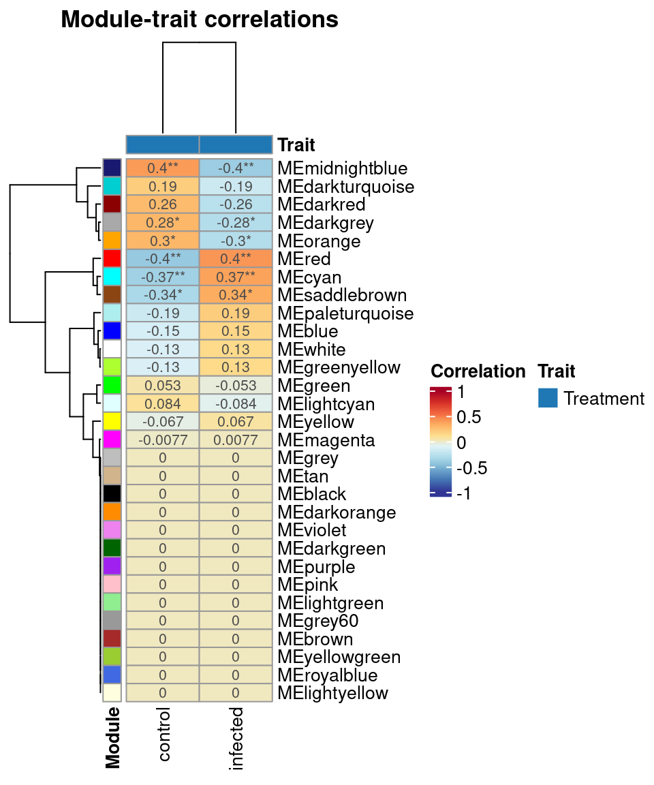

set.seed(123) # for reproducibility
# Load required packages
library(tidyverse)
library(BioNERO)
library(SummarizedExperiment)
library(here)2 Dealing with multiple data sets: consensus modules and module preservation
In this lesson, you will learn how to compare coexpression networks to identify preserved modules. At the end of the lesson, you will be able to:
- understand the concept of and identify consensus modules across data sets
- associate consensus modules to traits
- calculate module preservation statistics
Let’s start by loading the packages we will use.
2.1 Getting to know the example data
In this chapter, we will use gene expression data from two BioProjects:
PRJNA800609: soybean pods infected with the fungus Colletotrichum truncatum. Original data generated by Zhu et al. (2022).
PRJNA574764: soybean roots infected with the oomycete Phytophthora sojae. Original data generated by Ronne et al. (2020).
Our goal here is to explore similarities and differences in expression profiles between these two data sets.
Data are available as .rda files in the data/ directory of the GitHub repo associated with this course, and they were downloaded from The Soybean Expression Atlas v2 (Almeida-Silva, Pedrosa-Silva, and Venancio 2023) by searching by BioProject IDs. These .rda files contain SummarizedExperiment objects that store gene expression data and sample metadata.
Let’s load the data and explore them briefly.
# Load expression data
load(here("data", "se_PRJNA800609.rda"))
load(here("data", "se_PRJNA574764.rda"))
# Rename object to a simpler name
exp1 <- se_PRJNA800609
exp2 <- se_PRJNA574764
rm(se_PRJNA800609)
rm(se_PRJNA574764)
# Take a look at the object
exp1class: SummarizedExperiment
dim: 31422 60
metadata(0):
assays(1): ''
rownames(31422): Glyma.15G153300 Glyma.15G153400 ... Glyma.09G145600
Glyma.09G145700
rowData names(0):
colnames(60): SAMN25263487 SAMN25263488 ... SAMN25263525 SAMN25263526
colData names(4): Part Cultivar Treatment Timepointexp2class: SummarizedExperiment
dim: 32674 49
metadata(0):
assays(1): ''
rownames(32674): Glyma.06G124400 Glyma.06G124500 ... Glyma.19G260900
Glyma.19G261200
rowData names(0):
colnames(49): SAMN12868627 SAMN12868668 ... SAMN12868625 SAMN12868626
colData names(4): Part Cultivar Treatment TimepointcolData(exp1)DataFrame with 60 rows and 4 columns
Part Cultivar Treatment Timepoint
<character> <character> <character> <character>
SAMN25263487 pod ZC-2 control 8h
SAMN25263488 pod ZC-2 control 8h
SAMN25263507 pod ZC-2 infected 48h
SAMN25263508 pod ZC-2 infected 48h
SAMN25263527 pod Zhechun NO.3 infected 12h
... ... ... ... ...
SAMN25263522 pod Zhechun NO.3 control 12h
SAMN25263523 pod Zhechun NO.3 control 12h
SAMN25263524 pod Zhechun NO.3 control 12h
SAMN25263525 pod Zhechun NO.3 infected 12h
SAMN25263526 pod Zhechun NO.3 infected 12hcolData(exp2)DataFrame with 49 rows and 4 columns
Part Cultivar Treatment Timepoint
<character> <character> <character> <character>
SAMN12868627 root Misty infected 4 dpi
SAMN12868668 root PI 449459 infected 14 dpi
SAMN12868669 root PI 449459 infected 14 dpi
SAMN12868649 root PI 449459 control 0 dpi
SAMN12868628 root Misty infected 7 dpi
... ... ... ... ...
SAMN12868647 root PI 449459 control 0 dpi
SAMN12868648 root PI 449459 control 0 dpi
SAMN12868624 root Misty control 0 dpi
SAMN12868625 root Misty infected 4 dpi
SAMN12868626 root Misty infected 4 dpi
Practice
- Explore the sample metadata of
exp1andexp2and answer the questions below:
- How many different cultivars are there?
- What are the levels of the
Treatmentvariable, and how many samples are there for each level? - How many samples are there for each timepoint?
2.2 Data preprocessing
Now, we will preprocess the two data sets using the same parameters with exp_preprocess(). In details, we will:
- Keep only genes with median TPM >=5.
- Keep only the top 10k genes with the highest variances.
# Store each expression data in a list, each data set in a list element
exp_list <- list(
colletrotrichum_infection = exp1,
phytophthora_infection = exp2
)
# Loop through the list and preprocess data
exp_list <- lapply(
exp_list,
exp_preprocess,
min_exp = 5, variance_filter = TRUE, n = 1e4, Zk_filtering = FALSE
)
# Keep only genes that are shared between the two sets
shared <- intersect(
rownames(exp_list$colletrotrichum_infection),
rownames(exp_list$phytophthora_infection)
)
exp_list <- lapply(exp_list, function(x) x[shared, ])- Lines 2-5
- Store each expression data set in a list element.
- Lines 8-9
-
Loop through each element of the list
exp_list, and - Line 10
-
execute the function
exp_preprocess, - Line 11
- using these parameters.
Now, we have a list of processed expression data. This list, with each element representing a different data set, is what we will use for all network comparison functions in the next sections.
Practice
How many genes and samples are there in each processed data?
If we selected the top 10k genes with the highest variances, why do we not have 10k genes in each final set?
2.3 Identifying and analyzing consensus modules
Consensus modules are coexpression modules present in different, independent data sets, and they can used to find robust modules across data sets that study the same (or similar) conditions.
To identify them, BioNERO infers a GCN for each data set and looks for groups of genes that are densely connected in all data sets. Thus, the workflow here will be very similar to what we did in the previous lesson. We will:
- Identify the optimal \(\beta\) power to which correlations will be raised (see previous chapter for more details on why this is done), but for each individual data set -
consensus_SFT_fit() - Infer GCNs and identify consensus modules -
consensus_modules().
Let’s obtain the \(\beta\) powers.
# Identify the optimal beta power for each data set
sfts <- consensus_SFT_fit(
exp_list = exp_list,
setLabels = names(exp_list),
cor_method = "pearson"
) Power SFT.R.sq slope truncated.R.sq mean.k. median.k. max.k.
1 5 0.924 -0.968 0.935 170.0 110.00 692
2 6 0.925 -1.050 0.936 127.0 75.40 589
3 7 0.923 -1.120 0.936 97.4 52.70 509
4 8 0.927 -1.160 0.944 76.5 37.10 445
5 9 0.928 -1.200 0.946 61.2 27.00 392
6 10 0.927 -1.230 0.947 49.7 19.80 349
7 11 0.929 -1.260 0.950 40.9 14.80 312
8 12 0.931 -1.290 0.954 34.0 11.10 281
9 13 0.940 -1.300 0.963 28.6 8.52 254
10 14 0.944 -1.320 0.968 24.2 6.55 231
11 15 0.948 -1.330 0.970 20.7 5.18 210
12 16 0.950 -1.340 0.973 17.8 4.03 192
13 17 0.954 -1.350 0.977 15.4 3.18 177
14 18 0.959 -1.350 0.982 13.4 2.51 163
15 19 0.960 -1.370 0.984 11.7 2.03 151
16 20 0.959 -1.380 0.985 10.3 1.64 140
Power SFT.R.sq slope truncated.R.sq mean.k. median.k. max.k.
1 5 0.866 -0.895 0.933 157.00 110.00 572
2 6 0.875 -1.000 0.942 116.00 71.10 493
3 7 0.874 -1.080 0.941 88.20 47.40 432
4 8 0.874 -1.140 0.936 68.90 32.40 382
5 9 0.844 -1.210 0.908 55.00 22.60 342
6 10 0.834 -1.260 0.893 44.70 16.10 308
7 11 0.828 -1.310 0.884 36.80 11.60 279
8 12 0.821 -1.340 0.875 30.70 8.48 255
9 13 0.785 -1.390 0.845 25.80 6.32 233
10 14 0.777 -1.420 0.843 22.00 4.77 215
11 15 0.791 -1.420 0.853 18.90 3.63 198
12 16 0.803 -1.420 0.863 16.30 2.79 184
13 17 0.813 -1.430 0.870 14.20 2.17 171
14 18 0.825 -1.430 0.882 12.40 1.69 159
15 19 0.800 -1.470 0.866 10.90 1.34 148
16 20 0.807 -1.460 0.874 9.66 1.06 139sfts$powercolletrotrichum_infection phytophthora_infection
5 5 sfts$plot
Next, let’s find consensus modules.
# Find consensus modules
consensus <- consensus_modules(
exp_list,
power = sfts$power,
cor_method = "pearson"
)..connectivity..
..matrix multiplication (system BLAS)..
..normalization..
..done.
..connectivity..
..matrix multiplication (system BLAS)..
..normalization..
..done.
..done.
multiSetMEs: Calculating module MEs.
Working on set 1 ...
Working on set 2 ...# Taking a look at the consensus modules
plot_dendro_and_colors(consensus)
# Inspecting the output
names(consensus)[1] "consMEs" "exprSize" "sampleInfo"
[4] "genes_cmodules" "dendro_plot_objects"As you may have noticed, the output of consensus_modules() is very similar to the output of exp2gcn(). The output object is a list containing the following elements:
consMEs: list with consensus module eigengenes.exprSize: list with number of data sets, and number of genes and samples for each set.sampleInfo: list of data frames with sample metadata.genes_cmodules: data frame with genes and their corresponding consensus modules.dendro_plot_objects: objects for plotting withplot_dendro_and_colors().
Practice
Explore the output of consensus_modules() and answer the following questions:
- How many consensus modules were identified between the two data sets?
- What are the largest and the smallest consensus modules?
- What is the mean and median number of genes per consensus modules?
Next, you’d want to find correlations between consensus modules and traits of interest. Here, we will look for associations between consensus modules and the Treatment variable. Biologically speaking, we’re looking for shared transcriptional responses during infection with Colletotrichum truncatum and Phytophthora sojae (i.e., core immunity-related coexpression modules).
# Correlate consensus modules to traits
consensus_trait <- consensus_trait_cor(
consensus,
metadata_cols = "Treatment"
)
# Taking a look at the output
head(consensus_trait) trait ME cor pvalue group
1 control MEblack NA NA Treatment
2 control MEdarkred 0.26015095 0.07092879 Treatment
3 control MEblue -0.14934335 0.30747782 Treatment
4 control MEdarkturquoise 0.18536193 0.20341269 Treatment
5 control MEbrown NA NA Treatment
6 control MEgreen 0.05251631 0.69147472 Treatment# Plot consensus module-trait correlations
plot_module_trait_cor(consensus_trait)
Practice
Explore the output of consensus_trait_cor() and answer the questions below:
Which consensus module has the highest positive correlation to the infected status of the
Treatmentvariable?Which consensus module has the highest negative correlation to the infected status of the
Treatmentvariable?(Advanced) Based on your biological knowledge, what gene functions would you expect to find in the modules you found in questions 1 and 2?
2.4 Calculating module preservation statistics
When we infer consensus modules across data sets, we only consider shared modules, but we have no information on which modules are not shared between different data sets.
If you want to have a more detailed picture of which modules are preserved and which are not, you’d need to infer a separate network for each data set, and then calculate module preservation statistics between the networks.
Here, we will demonstrate how to do that using the same data set from the previous section. Since, we already have the processed data, we will proceed to GCN inference using the functions SFT_fit() and exp2gcn(), as we saw in Chapter 1.
# Get optimal beta power for each data set
powers <- lapply(exp_list, SFT_fit, cor_method = "pearson") Power SFT.R.sq slope truncated.R.sq mean.k. median.k. max.k.
1 3 0.234 -0.774 0.0153 1130.0 997.0 1810
2 4 0.372 -0.725 0.2440 805.0 699.0 1510
3 5 0.530 -0.728 0.4860 602.0 509.0 1290
4 6 0.654 -0.757 0.6480 466.0 382.0 1130
5 7 0.767 -0.816 0.7850 372.0 295.0 1000
6 8 0.840 -0.872 0.8600 303.0 233.0 898
7 9 0.884 -0.923 0.9010 251.0 186.0 813
8 10 0.901 -0.968 0.9190 211.0 151.0 742
9 11 0.912 -1.010 0.9280 179.0 123.0 681
10 12 0.920 -1.050 0.9380 154.0 101.0 628
11 13 0.921 -1.080 0.9390 134.0 84.5 582
12 14 0.914 -1.110 0.9310 117.0 70.4 541
13 15 0.919 -1.140 0.9390 102.0 59.5 504
14 16 0.921 -1.160 0.9410 90.5 50.5 471
15 17 0.923 -1.180 0.9420 80.4 42.9 441
16 18 0.925 -1.200 0.9460 71.7 36.3 415
17 19 0.927 -1.220 0.9480 64.3 30.9 390
18 20 0.931 -1.240 0.9520 57.8 26.7 368
Power SFT.R.sq slope truncated.R.sq mean.k. median.k. max.k.
1 3 0.66100 4.4900 0.947 1140.0 1140.0 1510
2 4 0.44400 2.0600 0.883 803.0 797.0 1230
3 5 0.16500 0.6540 0.685 594.0 580.0 1050
4 6 0.00224 -0.0438 0.585 456.0 432.0 921
5 7 0.28100 -0.4140 0.709 359.0 330.0 818
6 8 0.64700 -0.6550 0.878 290.0 255.0 735
7 9 0.78900 -0.7960 0.926 238.0 199.0 669
8 10 0.82900 -0.8870 0.937 198.0 158.0 613
9 11 0.84100 -0.9530 0.933 168.0 126.0 566
10 12 0.85100 -1.0100 0.937 143.0 103.0 524
11 13 0.86000 -1.0500 0.943 123.0 83.2 488
12 14 0.86000 -1.0900 0.941 107.0 68.1 456
13 15 0.86100 -1.1200 0.940 93.7 56.2 428
14 16 0.85800 -1.1600 0.934 82.5 46.5 402
15 17 0.86800 -1.1700 0.939 73.0 38.7 379
16 18 0.85500 -1.2100 0.925 65.0 32.4 359
17 19 0.83400 -1.2400 0.905 58.2 27.2 340
18 20 0.83600 -1.2600 0.905 52.3 23.1 322# Infer GCN for each data set
gcns <- lapply(seq_along(powers), function(n) {
gcn <- exp2gcn(
exp_list[[n]],
SFTpower = powers[[n]]$power,
cor_method = "pearson"
)
return(gcn)
})..connectivity..
..matrix multiplication (system BLAS)..
..normalization..
..done.
..connectivity..
..matrix multiplication (system BLAS)..
..normalization..
..done.
Practice
How many modules are there in each network?
Next, we can calculate module preservation statistics using the permutation-based approach implemented in NetRep.
# Calculate module preservation statistics
pres_netrep <- module_preservation(
exp_list,
ref_net = gcns[[1]],
test_net = gcns[[2]],
algorithm = "netrep"
)[2023-08-24 09:56:26 CEST] Validating user input...
[2023-08-24 09:56:26 CEST] Checking matrices for problems...
[2023-08-24 09:56:28 CEST] Input ok!
[2023-08-24 09:56:28 CEST] Calculating preservation of network subsets from
dataset "colletrotrichum_infection" in dataset
"phytophthora_infection".
[2023-08-24 09:56:28 CEST] Pre-computing network properties in dataset
"colletrotrichum_infection"...
[2023-08-24 09:56:29 CEST] Calculating observed test statistics...
[2023-08-24 09:56:29 CEST] Generating null distributions from 1000
permutations using 1 thread...
0% completed.
1% completed.
2% completed.
2% completed.
3% completed.
4% completed.
5% completed.
5% completed.
6% completed.
7% completed.
8% completed.
9% completed.
9% completed.
10% completed.
11% completed.
12% completed.
13% completed.
13% completed.
14% completed.
15% completed.
16% completed.
16% completed.
17% completed.
18% completed.
19% completed.
20% completed.
20% completed.
21% completed.
22% completed.
23% completed.
24% completed.
24% completed.
25% completed.
26% completed.
27% completed.
28% completed.
28% completed.
29% completed.
30% completed.
31% completed.
31% completed.
32% completed.
33% completed.
34% completed.
35% completed.
35% completed.
36% completed.
37% completed.
38% completed.
39% completed.
39% completed.
40% completed.
41% completed.
42% completed.
42% completed.
43% completed.
44% completed.
45% completed.
46% completed.
46% completed.
47% completed.
48% completed.
49% completed.
50% completed.
50% completed.
51% completed.
52% completed.
53% completed.
54% completed.
54% completed.
55% completed.
56% completed.
57% completed.
57% completed.
58% completed.
59% completed.
60% completed.
61% completed.
61% completed.
62% completed.
63% completed.
64% completed.
64% completed.
65% completed.
66% completed.
67% completed.
68% completed.
68% completed.
69% completed.
70% completed.
71% completed.
72% completed.
72% completed.
73% completed.
74% completed.
75% completed.
75% completed.
76% completed.
77% completed.
78% completed.
79% completed.
79% completed.
80% completed.
81% completed.
82% completed.
83% completed.
83% completed.
84% completed.
85% completed.
86% completed.
87% completed.
87% completed.
88% completed.
89% completed.
90% completed.
90% completed.
91% completed.
92% completed.
93% completed.
94% completed.
94% completed.
95% completed.
96% completed.
97% completed.
98% completed.
98% completed.
99% completed.
100% completed.
100% completed.
[2023-08-24 09:58:37 CEST] Calculating P-values...
[2023-08-24 09:58:38 CEST] Collating results...
[2023-08-24 09:58:39 CEST] Done!# Taking a look at the P-values for preservation statistics for each module
head(pres_netrep$p.values) avg.weight coherence cor.cor cor.degree cor.contrib
black 0.000999001 0.000999001 0.000999001 0.000999001 0.000999001
blue 0.142857143 0.262737263 0.000999001 0.000999001 0.096903097
cyan 0.994005994 0.999000999 0.000999001 0.000999001 0.000999001
darkgreen 0.976023976 1.000000000 0.000999001 0.001998002 0.994005994
green 0.002997003 1.000000000 0.000999001 0.000999001 0.000999001
grey 0.986013986 1.000000000 0.001998002 0.176823177 0.138861139
avg.cor avg.contrib
black 0.000999001 0.000999001
blue 0.000999001 0.188811189
cyan 0.000999001 0.000999001
darkgreen 0.000999001 0.100899101
green 0.000999001 0.000999001
grey 0.005994006 0.544455544Note that, to calculate module preservation statistics, you always need to choose a reference network and a test network. Thus, the function module_preservation() will return which modules of the reference network that are preserved in the test network.
Careful readers will also notice that this is another major difference between identifying consensus modules and calculating module preservation statistics: one can identify consensus modules across any number of data sets, but module preservation statistics can only be calculated in a pairwise manner.
Session information
This chapter was created under the following conditions:
─ Session info ───────────────────────────────────────────────────────────────
setting value
version R version 4.3.0 (2023-04-21)
os Ubuntu 20.04.5 LTS
system x86_64, linux-gnu
ui X11
language (EN)
collate en_US.UTF-8
ctype en_US.UTF-8
tz Europe/Brussels
date 2023-08-24
pandoc 3.1.1 @ /usr/lib/rstudio/resources/app/bin/quarto/bin/tools/ (via rmarkdown)
─ Packages ───────────────────────────────────────────────────────────────────
package * version date (UTC) lib source
abind 1.4-5 2016-07-21 [1] CRAN (R 4.3.0)
annotate 1.78.0 2023-04-25 [1] Bioconductor
AnnotationDbi 1.62.0 2023-04-25 [1] Bioconductor
backports 1.4.1 2021-12-13 [1] CRAN (R 4.3.0)
base64enc 0.1-3 2015-07-28 [1] CRAN (R 4.3.0)
Biobase * 2.60.0 2023-04-25 [1] Bioconductor
BiocGenerics * 0.46.0 2023-04-25 [1] Bioconductor
BiocManager 1.30.21.1 2023-07-18 [1] CRAN (R 4.3.0)
BiocParallel 1.34.0 2023-04-25 [1] Bioconductor
BiocStyle 2.29.1 2023-08-04 [1] Github (Bioconductor/BiocStyle@7c0e093)
BioNERO * 1.9.7 2023-08-23 [1] Bioconductor
Biostrings 2.68.0 2023-04-25 [1] Bioconductor
bit 4.0.5 2022-11-15 [1] CRAN (R 4.3.0)
bit64 4.0.5 2020-08-30 [1] CRAN (R 4.3.0)
bitops 1.0-7 2021-04-24 [1] CRAN (R 4.3.0)
blob 1.2.4 2023-03-17 [1] CRAN (R 4.3.0)
cachem 1.0.8 2023-05-01 [1] CRAN (R 4.3.0)
Cairo 1.6-0 2022-07-05 [1] CRAN (R 4.3.0)
checkmate 2.2.0 2023-04-27 [1] CRAN (R 4.3.0)
circlize 0.4.15 2022-05-10 [1] CRAN (R 4.3.0)
cli 3.6.1 2023-03-23 [1] CRAN (R 4.3.0)
clue 0.3-64 2023-01-31 [1] CRAN (R 4.3.0)
cluster 2.1.4 2022-08-22 [4] CRAN (R 4.2.1)
coda 0.19-4 2020-09-30 [1] CRAN (R 4.3.0)
codetools 0.2-19 2023-02-01 [4] CRAN (R 4.2.2)
colorspace 2.1-0 2023-01-23 [1] CRAN (R 4.3.0)
ComplexHeatmap 2.16.0 2023-04-25 [1] Bioconductor
crayon 1.5.2 2022-09-29 [1] CRAN (R 4.3.0)
data.table 1.14.8 2023-02-17 [1] CRAN (R 4.3.0)
DBI 1.1.3 2022-06-18 [1] CRAN (R 4.3.0)
DelayedArray 0.26.1 2023-05-01 [1] Bioconductor
digest 0.6.33 2023-07-07 [1] CRAN (R 4.3.0)
doParallel 1.0.17 2022-02-07 [1] CRAN (R 4.3.0)
dplyr * 1.1.2 2023-04-20 [1] CRAN (R 4.3.0)
dynamicTreeCut 1.63-1 2016-03-11 [1] CRAN (R 4.3.0)
edgeR 3.42.0 2023-04-25 [1] Bioconductor
evaluate 0.21 2023-05-05 [1] CRAN (R 4.3.0)
fansi 1.0.4 2023-01-22 [1] CRAN (R 4.3.0)
farver 2.1.1 2022-07-06 [1] CRAN (R 4.3.0)
fastcluster 1.2.3 2021-05-24 [1] CRAN (R 4.3.0)
fastmap 1.1.1 2023-02-24 [1] CRAN (R 4.3.0)
forcats * 1.0.0 2023-01-29 [1] CRAN (R 4.3.0)
foreach 1.5.2 2022-02-02 [1] CRAN (R 4.3.0)
foreign 0.8-82 2022-01-13 [4] CRAN (R 4.1.2)
Formula 1.2-5 2023-02-24 [1] CRAN (R 4.3.0)
genefilter 1.82.0 2023-04-25 [1] Bioconductor
generics 0.1.3 2022-07-05 [1] CRAN (R 4.3.0)
GENIE3 1.22.0 2023-04-25 [1] Bioconductor
GenomeInfoDb * 1.36.0 2023-04-25 [1] Bioconductor
GenomeInfoDbData 1.2.10 2023-04-28 [1] Bioconductor
GenomicRanges * 1.52.0 2023-04-25 [1] Bioconductor
GetoptLong 1.0.5 2020-12-15 [1] CRAN (R 4.3.0)
ggdendro 0.1.23 2022-02-16 [1] CRAN (R 4.3.0)
ggnetwork 0.5.12 2023-03-06 [1] CRAN (R 4.3.0)
ggplot2 * 3.4.1 2023-02-10 [1] CRAN (R 4.3.0)
ggrepel 0.9.3 2023-02-03 [1] CRAN (R 4.3.0)
GlobalOptions 0.1.2 2020-06-10 [1] CRAN (R 4.3.0)
glue 1.6.2 2022-02-24 [1] CRAN (R 4.3.0)
GO.db 3.17.0 2023-05-02 [1] Bioconductor
gridExtra 2.3 2017-09-09 [1] CRAN (R 4.3.0)
gtable 0.3.3 2023-03-21 [1] CRAN (R 4.3.0)
here * 1.0.1 2020-12-13 [1] CRAN (R 4.3.0)
Hmisc 5.0-1 2023-03-08 [1] CRAN (R 4.3.0)
hms 1.1.3 2023-03-21 [1] CRAN (R 4.3.0)
htmlTable 2.4.1 2022-07-07 [1] CRAN (R 4.3.0)
htmltools 0.5.5 2023-03-23 [1] CRAN (R 4.3.0)
htmlwidgets 1.6.2 2023-03-17 [1] CRAN (R 4.3.0)
httr 1.4.5 2023-02-24 [1] CRAN (R 4.3.0)
igraph 1.4.2 2023-04-07 [1] CRAN (R 4.3.0)
impute 1.74.0 2023-04-25 [1] Bioconductor
intergraph 2.0-2 2016-12-05 [1] CRAN (R 4.3.0)
IRanges * 2.34.0 2023-04-25 [1] Bioconductor
iterators 1.0.14 2022-02-05 [1] CRAN (R 4.3.0)
jsonlite 1.8.7 2023-06-29 [1] CRAN (R 4.3.0)
KEGGREST 1.40.0 2023-04-25 [1] Bioconductor
knitr 1.43 2023-05-25 [1] CRAN (R 4.3.0)
labeling 0.4.2 2020-10-20 [1] CRAN (R 4.3.0)
lattice 0.20-45 2021-09-22 [4] CRAN (R 4.2.0)
lifecycle 1.0.3 2022-10-07 [1] CRAN (R 4.3.0)
limma 3.56.0 2023-04-25 [1] Bioconductor
locfit 1.5-9.7 2023-01-02 [1] CRAN (R 4.3.0)
lubridate * 1.9.2 2023-02-10 [1] CRAN (R 4.3.0)
magick 2.7.4 2023-03-09 [1] CRAN (R 4.3.0)
magrittr 2.0.3 2022-03-30 [1] CRAN (R 4.3.0)
MASS 7.3-58.2 2023-01-23 [4] CRAN (R 4.2.2)
Matrix 1.5-1 2022-09-13 [4] CRAN (R 4.2.1)
MatrixGenerics * 1.12.2 2023-06-09 [1] Bioconductor
matrixStats * 1.0.0 2023-06-02 [1] CRAN (R 4.3.0)
memoise 2.0.1 2021-11-26 [1] CRAN (R 4.3.0)
mgcv 1.8-41 2022-10-21 [4] CRAN (R 4.2.1)
minet 3.58.0 2023-04-25 [1] Bioconductor
munsell 0.5.0 2018-06-12 [1] CRAN (R 4.3.0)
NetRep 1.2.6 2023-01-06 [1] CRAN (R 4.3.0)
network 1.18.1 2023-01-24 [1] CRAN (R 4.3.0)
nlme 3.1-162 2023-01-31 [4] CRAN (R 4.2.2)
nnet 7.3-18 2022-09-28 [4] CRAN (R 4.2.1)
patchwork 1.1.2 2022-08-19 [1] CRAN (R 4.3.0)
pillar 1.9.0 2023-03-22 [1] CRAN (R 4.3.0)
pkgconfig 2.0.3 2019-09-22 [1] CRAN (R 4.3.0)
plyr 1.8.8 2022-11-11 [1] CRAN (R 4.3.0)
png 0.1-8 2022-11-29 [1] CRAN (R 4.3.0)
preprocessCore 1.62.0 2023-04-25 [1] Bioconductor
purrr * 1.0.1 2023-01-10 [1] CRAN (R 4.3.0)
R6 2.5.1 2021-08-19 [1] CRAN (R 4.3.0)
RColorBrewer 1.1-3 2022-04-03 [1] CRAN (R 4.3.0)
Rcpp 1.0.10 2023-01-22 [1] CRAN (R 4.3.0)
RCurl 1.98-1.12 2023-03-27 [1] CRAN (R 4.3.0)
readr * 2.1.4 2023-02-10 [1] CRAN (R 4.3.0)
reshape2 1.4.4 2020-04-09 [1] CRAN (R 4.3.0)
RhpcBLASctl 0.23-42 2023-02-11 [1] CRAN (R 4.3.0)
rjson 0.2.21 2022-01-09 [1] CRAN (R 4.3.0)
rlang 1.1.1 2023-04-28 [1] CRAN (R 4.3.0)
rmarkdown 2.23 2023-07-01 [1] CRAN (R 4.3.0)
rpart 4.1.19 2022-10-21 [4] CRAN (R 4.2.1)
rprojroot 2.0.3 2022-04-02 [1] CRAN (R 4.3.0)
RSQLite 2.3.1 2023-04-03 [1] CRAN (R 4.3.0)
rstudioapi 0.14 2022-08-22 [1] CRAN (R 4.3.0)
S4Arrays 1.0.1 2023-05-01 [1] Bioconductor
S4Vectors * 0.38.0 2023-04-25 [1] Bioconductor
scales 1.2.1 2022-08-20 [1] CRAN (R 4.3.0)
sessioninfo 1.2.2 2021-12-06 [1] CRAN (R 4.3.0)
shape 1.4.6 2021-05-19 [1] CRAN (R 4.3.0)
statmod 1.5.0 2023-01-06 [1] CRAN (R 4.3.0)
statnet.common 4.8.0 2023-01-24 [1] CRAN (R 4.3.0)
stringi 1.7.12 2023-01-11 [1] CRAN (R 4.3.0)
stringr * 1.5.0 2022-12-02 [1] CRAN (R 4.3.0)
SummarizedExperiment * 1.30.1 2023-05-01 [1] Bioconductor
survival 3.5-3 2023-02-12 [4] CRAN (R 4.2.2)
sva 3.48.0 2023-04-25 [1] Bioconductor
tibble * 3.2.1 2023-03-20 [1] CRAN (R 4.3.0)
tidyr * 1.3.0 2023-01-24 [1] CRAN (R 4.3.0)
tidyselect 1.2.0 2022-10-10 [1] CRAN (R 4.3.0)
tidyverse * 2.0.0 2023-02-22 [1] CRAN (R 4.3.0)
timechange 0.2.0 2023-01-11 [1] CRAN (R 4.3.0)
tzdb 0.3.0 2022-03-28 [1] CRAN (R 4.3.0)
utf8 1.2.3 2023-01-31 [1] CRAN (R 4.3.0)
vctrs 0.6.3 2023-06-14 [1] CRAN (R 4.3.0)
WGCNA 1.72-1 2023-01-18 [1] CRAN (R 4.3.0)
withr 2.5.0 2022-03-03 [1] CRAN (R 4.3.0)
xfun 0.39 2023-04-20 [1] CRAN (R 4.3.0)
XML 3.99-0.14 2023-03-19 [1] CRAN (R 4.3.0)
xtable 1.8-4 2019-04-21 [1] CRAN (R 4.3.0)
XVector 0.40.0 2023-04-25 [1] Bioconductor
yaml 2.3.7 2023-01-23 [1] CRAN (R 4.3.0)
zlibbioc 1.46.0 2023-04-25 [1] Bioconductor
[1] /home/faalm/R/x86_64-pc-linux-gnu-library/4.3
[2] /usr/local/lib/R/site-library
[3] /usr/lib/R/site-library
[4] /usr/lib/R/library
──────────────────────────────────────────────────────────────────────────────References
Network Analysis in Systems Biology with R/Bioconductor - 2 Dealing with multiple data sets: consensus modules and module preservation Network Analysis in Systems Biology with R/Bioconductor - 2 Dealing with multiple data sets: consensus modules and module preservation Network Analysis in Systems Biology with R/Bioconductor - 2 Dealing with multiple data sets: consensus modules and module preservation Network Analysis in Systems Biology with R/Bioconductor
Almeida-Silva, Fabricio, Francisnei Pedrosa-Silva, and Thiago M Venancio. 2023. “The Soybean Expression Atlas V2: A Comprehensive Database of over 5000 RNA-Seq Samples.” bioRxiv, 2023–04.
Ronne, Maxime de, Caroline Labbé, Amandine Lebreton, Humira Sonah, Rupesh Deshmukh, Martine Jean, François Belzile, Louise O’Donoughue, and Richard Bélanger. 2020. “Integrated QTL Mapping, Gene Expression and Nucleotide Variation Analyses to Investigate Complex Quantitative Traits: A Case Study with the Soybean–Phytophthora Sojae Interaction.” Plant Biotechnology Journal 18 (7): 1492.
Zhu, Longming, Qinghua Yang, Xiaomin Yu, Xujun Fu, Hangxia Jin, and Fengjie Yuan. 2022. “Transcriptomic and Metabolomic Analyses Reveal a Potential Mechanism to Improve Soybean Resistance to Anthracnose.” Frontiers in Plant Science 13: 850829.